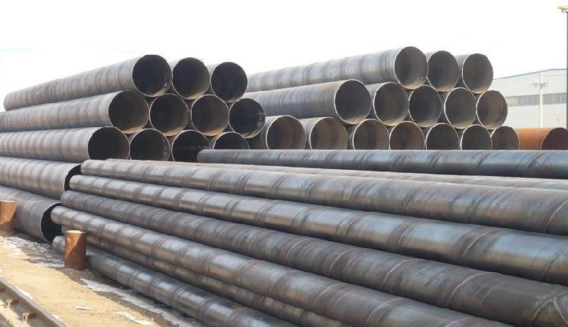

螺旋钢管厂家产厂家下游终端需求仍没有彻底复

在传统淡季到来之际，大邱庄矩管消费厂家下游终端需求仍没有彻底复苏的迹象。螺旋钢管厂家，相关机构监测数据就显示，农历2月(3.12-4.9)终端推销量较农历1月大幅上升112.6%，但较去年同期仍下降8.6%，阐明往年终端需求上升的力度仍不及今年，进入5月后，首钢、宝钢、武钢、沙钢、莱钢等主流钢厂纷繁下调了出厂价，剖析师以为，假如钢厂仍坚持跌不到边沿本钱线不增产，静待钢市反弹机遇的到来，那么将来整个钢材市场将承压弱势运转，步入较长一段工夫的调整。业内人士则指出，近期国际钢市所面临的积极要素有所增多。次要表如今钢价已处于底部区域、需求迟缓上升螺旋钢管厂家，库存延续下降;加之国际次要经济体普遍采取宽松货币政策，国际政策层面也有安慰经济增长政策出台的预期，将有利于市场决心逐渐恢复。但在国际粗钢产能继续高位释放的状况下，国际大邱庄矩管消费厂家市场供大于求的情势依然相当严峻，估计短期国际钢价仍将以弱势盘整走势为主。
地址：河北沧州螺旋钢管生产基地
手机：186-3170-5801 == QQ791117